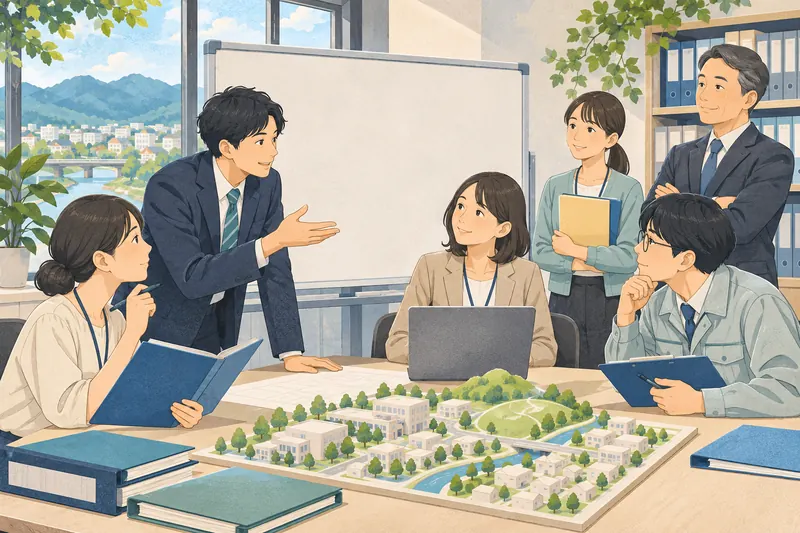

地域振興・自治会担当の職務経歴書｜書き出しから実績の出し方まで

地域振興・自治会担当の職務経歴書は、地域名や行事の名前を並べるより、担当した手順と責任から書くと伝わりやすくなります。調整という言葉を、確認、資料、連絡、進行管理へ分けてみましょう。組織が行ったことと、自分が行ったことを分けるのが基本です。
公務員向けの求人一覧で応募先の職務を読み、接点がある工程を探せます。書類を作ることを退職の決定とせず、現職で経験を広げる方法も含めて整理できます。
本記事は2026年11月時点の公開情報にもとづきます。確認日は2026年11月15日です。
最初に分掌と担当当時の事実を確かめる
地域振興という部署名でも、自治会支援、施設、行事、協働、認可など、扱う仕事は自治体によって違います。現在の公式分掌は部署の説明に使えますが、過去に自分が経験した内容を証明するものとは限りません。担当期間、当時の事業、実際に割り当てられた作業を確認しましょう。
北九州市の公式分掌には、地域振興課のコミュニティ活動促進や市政連絡の制度、地縁団体の認可などが掲げられ、市民センターの運営と整備には別の担当があります。この分掌を参考に職種を説明する場合も、同市の組織例であることを明確にします。課の全業務を本人の経験として記載しません。
職務経歴書では、所属と期間の次に、自分の担当領域を短く書きます。その後、相手、工程、判断者、作成物、工夫へ進むと読みやすくなります。部署名の説明を長くするより、読み手が任せられる作業を確認できるようにします。
直営、委託、指定管理、団体自身の活動も別です。本人が委託先へ確認した内容と、相手が実施した内容を切り分けます。委託先の企画や制作を、自分が行った経験として書かないことが必要です。
書き出しは担当領域と本人工程で作る
次の文例は、実在の職員や採用事例を示さない独自の架空ひな型です。空欄へ確認できる本人の事実を入れ、担当していない項目は削除してください。成果や件数を想像して補うための例ではありません。
［担当期間］に［自治体の部署・担当領域］で、［制度・行事等の種類］の運営事務を担当。［申請書の受領・資料取りまとめ・日程調整等の本人工程］を行い、［判断が必要な事項］は［確認先の役割］へ照会した。［自分で実施した工夫］により、［確認できる作業上の変化］を整理した。
最後の変化を測定していないなら、その部分を削除し、実施した工夫までにとどめます。公表済みの参加人数があっても、本人の作業の効果と確かめられなければ、直接の成果にはしません。事業の規模を示す数字と、自分の実績の数字は異なります。
「地域の活性化に貢献」だけでは、何をしたかが分かりません。資料の不足を確認した、予定の重なりを整理した、決定事項を関係者に連絡したなど、具体的な行動を添えます。専門用語は必要な範囲で説明し、自治体の内部でしか通じない略称は読み手が理解できる表現に直します。
補助受付は受領から確認・引き継ぎまで分ける
補助事業では、案内、申請書の受領、不備連絡、審査資料、実績報告などのうち、担当した部分を整理します。受付したことと交付決定したことは別です。支払や監査を経験していないなら、補助業務全体を管理したように書かないようにします。
［事業の種類］の申請受付を担当し、［自分が確認した項目］を確認した。不足事項は［連絡方法］で申請者へ伝え、［個別判断が必要な事項］は担当者へ引き継いだ。［案内や確認手順の工夫］を実施した。
この独自の架空ひな型では、審査対象の団体名や具体的な相談内容を記入する必要はありません。確認の順序、期限、誰に照会したかを説明すれば、運用事務としての経験が伝わります。交付金額を記載する場合も、公開可能性と本人の役割を確かめます。
民間向けには、申請運用、書類確認、問い合わせ整理、期限管理といった言葉に接点があります。ただし、企業の投資判断や会計処理、法務審査の経験に自動的に置き換えられるわけではありません。応募先が求める作業の深さを確認します。

会議と団体連絡は意思決定者を残して書く
会議の経験は、出欠、議題、資料、会場、議事記録、決定後の確認へ分けます。自分が行った調整と、責任者や団体が決めた方針を区別すると、責任の範囲が伝わります。会議に参加したことだけで、合意形成を主導したとは書きません。
［会議の種類］の事務局として、［案内・資料・日程等］を取りまとめた。関係者の［確認が必要な事項］を整理し、［決定者の役割］へ確認した。決定後は［連絡・進行確認等］を担当した。
これも独自の架空ひな型です。相手の意見を自分が決めたことにせず、何を確認して次の工程へ渡したかを書きます。「調整力がある」とまとめる前に、予定が合わない、情報が不足する、判断が割れるといった場面での行動を抽象化して説明しましょう。
地方自治法第260条の2の認可を受けた地縁団体でも、行政組織の一部になるものではありません。同条には自主的な活動に関する規定があります。認可の受付・確認と市町村長の認可、団体への支援と団体内部の意思決定を区別します。
自治会と連絡した経験は、会員や役員を雇用して管理した経験ではありません。「団体を統括」ではなく、連絡、資料、意見整理などの実際の工程を示します。管理職の募集で必要な勤怠、配置、評価等の責任があったかは、別に確認する必要があります。
行事は企画・準備・当日の担当を分ける
行事の経験では、企画案、会場、関係部署、物品、広報、委託先、当日の連絡などを分けます。自分が企画の目的や内容を設計したのか、決定済みの企画を実施する準備をしたのかで、使う言葉が変わります。後者も運営経験として説明できます。
［行事の種類］で［担当工程］を担当。［確認先］との間で［日程・物品・案内等］を調整し、［自分で作った資料や連絡方法］を用いて準備状況を管理した。［担当外の企画・制作等］は関係者が担当した。
この独自の架空ひな型に、参加人数や満足度を創作して入れないようにします。組織の公表値を使う場合も、事業全体の数字であることを示し、本人の単独成果にしません。天候や他の施策の影響もあるため、参加増加を自分の調整だけの効果と断定しないことが必要です。
行事を運営したことと、商品を提案して契約を獲得したことも別です。企業のイベント職やコミュニティ職では、営業、収支、発信などが含まれる場合があります。実際に担った部分を残した上で、応募先の未経験領域を確認します。
公式募集の必須・歓迎に経験を当てる
2026年11月15日に確認したUDSの下北線路街「空き地」の募集では、施設対応や催事、地域との連絡に加え、収支や営業に関する役割が示されています。必須欄のPCやSNS等の作業と、歓迎欄の地域・イベント・法人折衝等の経験を分けて確認します。
書類では「地域に詳しい」だけでなく、使用した機能、発信の担当範囲、準備した工程などを示します。SNSの原稿を確認しただけなら、投稿運用を一人で行ったように記載しません。地域担当という所属だけで、募集の全条件に合うとはいえません。
SHEの横浜拠点の募集は、新規顧客への対応が中心で、数値目標に対して自分で考え成果を出した経験などを必須事項に挙げています。イベント等の経験は歓迎事項にも分かれています。行事参加者の集計を、そのまま顧客獲得や販売目標達成の経験にはしません。
これらは確認時点の個別募集で、採用のしやすさや現在の募集継続を保証するものではありません。経験を必須条件に対応させ、判断しにくい事項は採用窓口への確認に残します。条件に合わせるために、担当していない営業や経営の経験を追加しないことが大切です。
数字がなくても工夫と確認可能な変化を示せる
成果欄に金額や件数がない場合も、作業の説明はできます。案内を整理した、確認項目をそろえた、未処理事項を見えるようにしたなど、本人が実施した改善を記載します。改善前後を比較していなければ、削減率や効率化の大きさを加えません。
チームで行った工夫なら、その中で自分が担当した部分を明示します。提案した、資料を作った、試行に参加した、運用後の確認をしたなど、行動を分けます。責任者の承認や他部署の協力が必要だった場合は、その関係を消さないようにします。
実績の根拠として内部資料を持ち出す必要はありません。公開できる範囲で、作業の目的、実施したこと、確認できる結果を説明します。評価されるか分からない不安から、事実のない数字を加えるより、質問されても担当範囲を説明できる状態を目指しましょう。
名簿・相談・内部審査資料を添付しない
地方公務員法第34条の守秘義務は退職後も関係します。住民名簿、自治会の相談、補助審査、調達の内部情報、関係者の連絡先を職務経歴書の見本にしないことが必要です。氏名を消しただけでも、地域や時期を合わせると相手が特定される場合があります。
写真や行事資料も、公開済みだから自由に利用できるとは限りません。利用できる範囲、自分の作成物か、相手の権利や個人情報が含まれないかを確認します。内部資料を加工してポートフォリオにする方法を先に進めないようにします。
相手とのつながりを、入社後の紹介や便宜の材料にする必要もありません。連絡先そのものではなく、連絡の手順、相手の意思の確認、決定事項の共有方法へ抽象化して書きます。説明してよいか迷う内容は、所属の適切な窓口で先に確認しましょう。
提出前は応募先の仕事に必要な説明か見直す
最初の見直しでは、主語を確認します。自治体が決めたこと、団体が決めたこと、受託者が実施したことと、自分の行動が混ざっていないかを確かめます。次に、担当期間と現在の制度を取り違えていないかを確認します。
その後、応募先の必須条件と一項目ずつ照合します。接点がある部分は具体化し、未経験の部分は無理に埋めません。公開されていない勤務条件や役割は、面談で確認する事項として別のメモに残すと、書類の中で推測を事実にしなくて済みます。
部署の説明が長くなったら、本人の作業が分かる段落を優先します。専門用語を言い換えても内容が変わっていないか、連絡調整を指揮命令や営業へ拡張していないかを見直しましょう。応募しない場合も、現職で今後経験したい工程を考える資料になります。
公務員向けの転職相談では、秘密に触れない本人工程から経歴の伝え方を整理できます。ご利用は無料です（紹介手数料は採用企業の負担）。応募先の条件と確認できる経験を並べて考えられます。
よくある質問
自治会を統括したと書いてもよいですか？
実際の権限と担当によります。団体への連絡や支援と、組織内部の管理は別です。相手の自主的な決定を残し、資料、日程、意見整理など本人が行った工程で説明しましょう。
参加人数を実績として使えますか？
公開可能性と数字の意味を確認します。事業全体の規模と本人の成果は別です。確認できる根拠があっても、参加者の変化を本人だけの効果と断定せず、自分の担当範囲を併記します。
数字や資料を出せないと書類が作れませんか？
作業の目的、担当工程、工夫、確認先を整理すれば説明できます。内部資料や相談記録を持ち出す必要はありません。未測定の効果や数字を補わず、開示できる事実で作成しましょう。
相談の流れを先に知りたい方は、LINEでの案内も利用できます。現職を続ける場合も含め、経験と希望を分けて整理していきましょう。